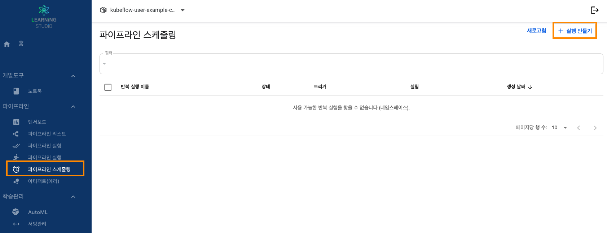

1. 러닝스튜디오 대시보드 접속합니다.
2. 좌측에 메뉴에서 파이프라인 → 파이프라인 스케줄링 탭을 선택입니다.
1) 각 항목 선택하여 생성
| 항목 | 설명 |
|---|---|
| 파이프라인 | 기존에 생성된 파이프라인 선택 |
| 실행 이름 | 업로드된 파이프라인 파일 이름 기반으로 자동 생성됨 |
| 설명 | 해당 스케줄링에 대한 설명 |
| 실험 | 사전에 생성된 파이프라인 실험선택 |
| 항목 | 설명 |
|---|---|
| 실험 세부 정보 | 일회성 : 파이프라인 1회 실행 옵션 |
| 트리거 유형 | 주기적 |
| 최대 동시 실행 | 파이프라인 실행 동시 실행 횟수 |
| 시작일 시간 설정 | 사전에 생성된 파이프라인 실험선택 |
| 종료일 및 시간 설정 | 사전에 생성된 파이프라인 실험선택 |
| 실행 간격 | 트리거 유형 -> 주기적 선택시 실행 간격 지정 |
| 항목 | 설명 |
|---|---|
| 실험 세부 정보 | 반복 : 스케줄링을 통한 파이프라인 실행 옵션 |
| 트리거 유형 | 예약 : 스케줄링을 통한 파이프라인 실행 옵션 |
| 최대 동시 실행 | 파이프라인 실행 동시 실행 횟수 |
| 시작일 시간 설정 | 사전에 생성된 파이프라인 실험선택 |
| 종료일 및 시간 설정 | 사전에 생성된 파이프라인 실험선택 |
| 실행 간격 | 분, 시간, 일, 주, 월 |
| Cron식 편집 허용(Cron 형식으로 작성) | ───────────── minute (0 - 59) ───────────── hour (0 - 23) ───────────── day of month (1 - 31) ───────────── month (1 - 12) ───────────── day of week (0 - 6) (일요일 - 토요일; 특정 환경에서는 7도 일요일) |
| 연간 | 1년에 한 번, 1월 1일 자정에 실행 | 0 0 0 1 1 * | |
| 월간 | 한 달에 한 번, 자정, 매월 1일 실행 | 0 0 0 1 * * | |
| 주간 | 일주일에 한 번, 토요일/일 사이 자정에 실행 | 0 0 0 * * 0 | |
| 일별 | 하루에 한 번, 자정에 실행 | 0 0 0 * * * | |
| 시간별 | 한 시간에 한 번씩 실행(시간 시작) | 0 0 * * * * |